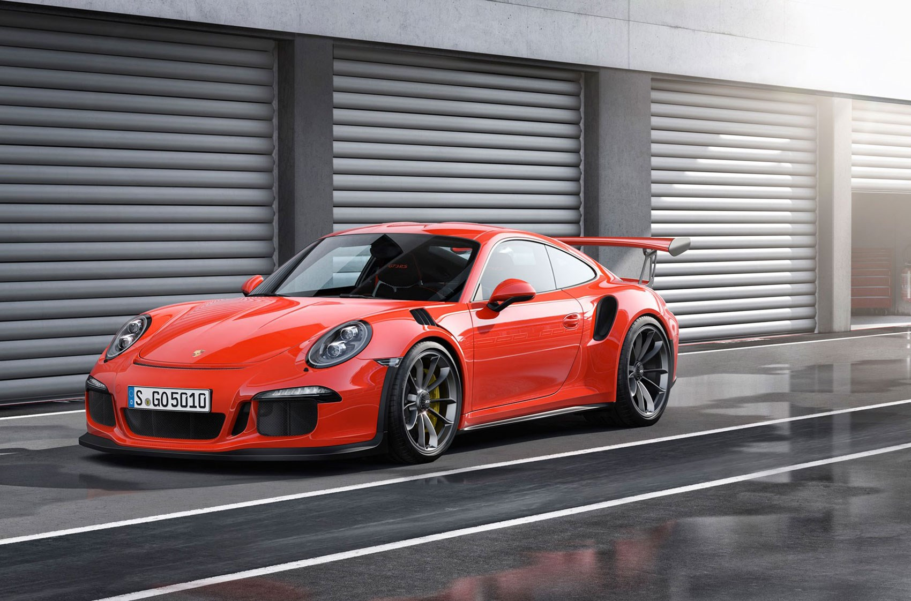
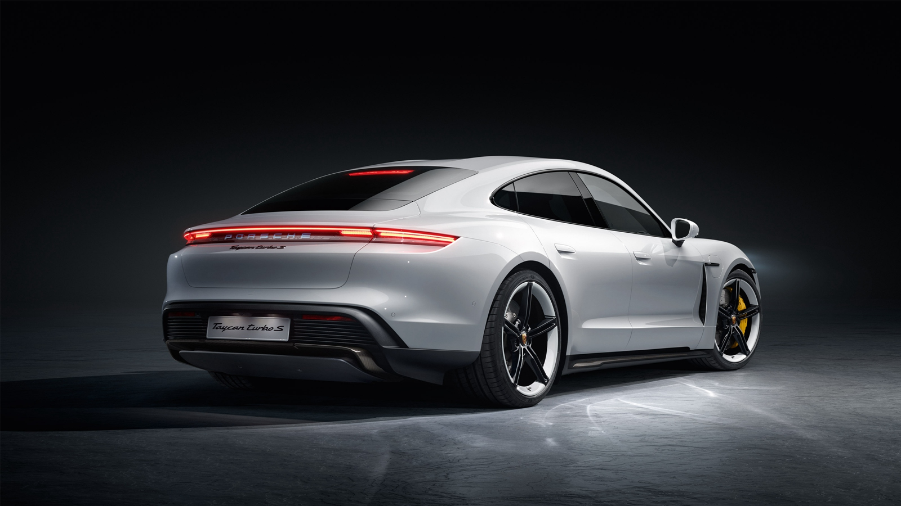
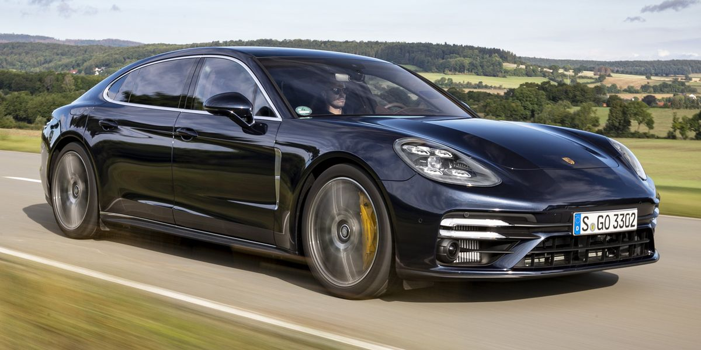
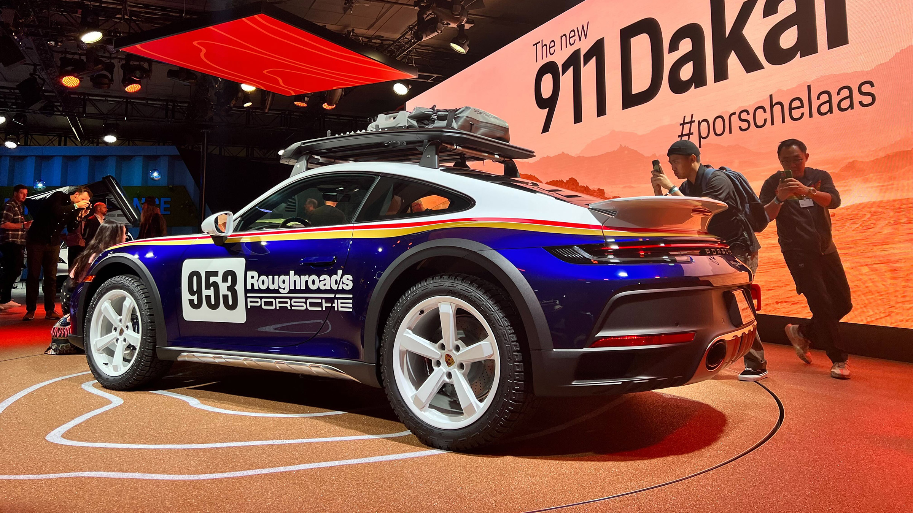
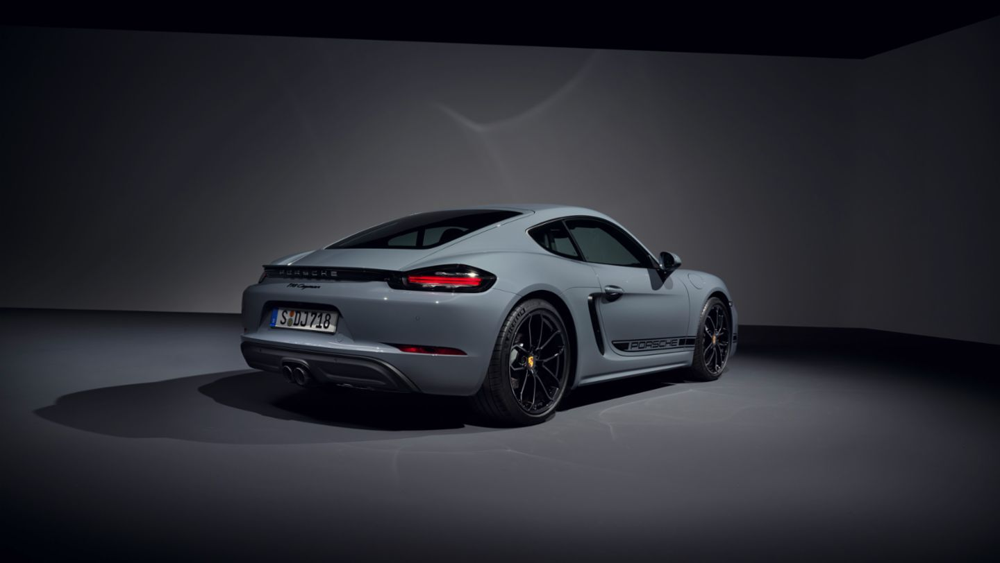

Selamat datang di List Mobil Porsche
Kami Menglist Berbagai Jenis Mobil Porsche Dengan Bentuk Dan Type Yang Beragam
List Mobil
-

Porsche 911 GT3 PDK
Porsche 911 GT3 PDK adalah 2 seater Coupe yang tersedia seharga Rp 4 Milyar di Indonesia.
Mobil ini tersedia dalam 15 warna dan Otomatis opsi transmisi di Indonesia.
Mobil ini memiliki ground clearance 137 mm dengan dimensi sebagai berikut:
4545 mm L x 1852 mm W x 1269 mm H. Kompetitor terdekat 911 GT3 PDK adalah
GranTurismo MC Stradale V8, AMG GT 53 4Matic+ 4 Door Coupe, Taycan Turbo dan GLE-Class 53 4Matic + Coupe.Harga: Rp 4.000.000.000
-

Porsche Taycan
Porsche Taycan 2023 adalah 4 dan 5 Seater Wagon yang tersedia dalam daftar harga Rp 2,85 Milyar di Indonesia.
Mobil ini memiliki ground clearance 148 mm dengan dimensi sebagai berikut: 4963 mm L x 2144 mm W x 1379 mm H.
Pesaing terdekat Porsche Taycan adalah BRZ, TT Coupe, 718 dan A5.Harga: Rp 2.850.000.000
-

Porsche Panamera
Porsche Panamera 2023 adalah 4 Seater Sedan yang tersedia dalam daftar harga Rp 2,2 - 3,9 Milyar di Indonesia.
Ini tersedia dalam 16 warna, 12 varian, 5 pilihan mesin, dan 1 opsi transmisi: Otomatis di Indonesia. Dimensi Panamera adalah 5015 mm
L x 1931 mm W x 1418 mm H. Pesaing terdekat Porsche Panamera adalah EQS, A7, 7 Series Sedan dan Ghibli.Harga: Rp 2.200.000.000 - 3.900.000.000
-

Porsche 911 Dakar
Mobil yang Anda lihat di sini, bagaimanapun, bukan konversi. Ini adalah Porsche 911 Dakar 2023, memiliki ground clearance tinggi
dengan suspensi besar dan punya ban segala medan yang langsung dari pabrik. Model ini akan menjadi langka, karena hanya 2.500
yang diproduksi di seluruh dunia.Harga: Rp 10.000.000.000
-

Porsche 718
Porsche 718 2023 adalah 2 Seater Coupe yang tersedia dalam daftar harga Rp 1,5 - 2,5 Milyar (Comming Soon) di Indonesia.
Ini tersedia dalam 16 warna, 13 varian, 4 pilihan mesin, dan 2 opsi transmisi: Otomatis dan Manual di Indonesia.
Dimensi 718 adalah 4379 mm L x 1801 mm W x 1295 mm H. Pesaing terdekat Porsche 718 adalah BRZ, TT Coupe, A5 dan GLC-Class.Harga: Rp 1.500.000.000 - 2.500.000.000